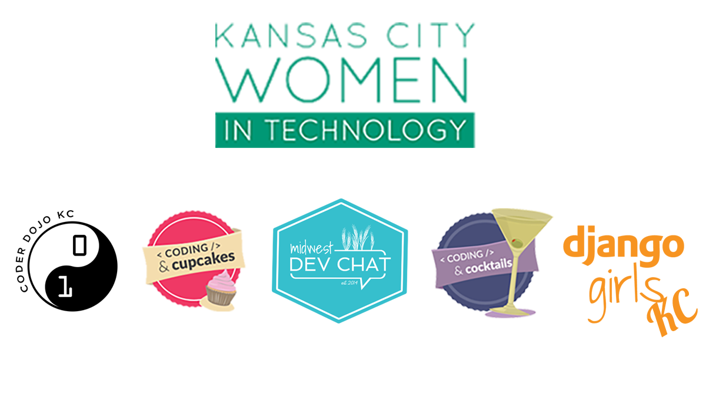

The 10 Commandments of Community Organizing
Jennifer Wadella
Thanks to all our sponsors!

Jennifer Wadella
@likeOMGitsFEDAY
- Director of Angular Dev @ Bitovi
- Nonprofit Founder/Director
- International Speaker
- Kombucha brewin' crazy plant lady
This talk may contain strong language, harsh truths, and serious passion.
Programs I've launched
Why Communities Matter
- Workforce development - free training!
- Networking
- Growth Opportunties
- Maslow's Hierarchy - Love/belonging & self-actualization
Community Organizers are unsung heroes
<3
Why 10 Commandments?
Thou shalt practice self care
Avoid Burnout At All Costs
Take on small tasks and improvements
Give yourself office hours
Guard your time carefully
Your time is your biggest asset.
"No." is a complete sentence
Jennifer's First Law
A person's incompetence in email is DIRECTLY PROPORTIONAL to the likelihood that they will massively waste your time
Define your personal scope
and don't go outside it!

Find a task tracking system that works for you
- Trello
- Physical Notepad
- Calendar to-dos
Own your calendar
Calendy - about as close as you can get to a personal secretary
Fielding Criticism

Learn to decipher it
It is extremely hard not to take criticism of your organization as a criticism of yourself
Build your network
- Find other community leaders
- Talk through problems
- Find a mentor
- Mentor budding community leaders
Ping me on twitter for slack inv -
https://communityorganizer-hq.slack.com
Learn to Delegate
Thou shalt become an expert communicator
Never assume people are as tuned in to your organization as you are
Choose your communication format based on your recipients.
When to Slack
- ✅ Convos where everyone is online & available
- ✅ Quick Q&A
- ✅ Random bullshitting/funny links
- ❌ Relaying important org-wide info
- ❌ Feedback
- ❌ Group brainstorming + decision making
Make things EASY for people with lists, call out important information
Date formatting - Day of week, date, time + timezone
If you want a response ...
End with a specific call to action by date
This WILL take more effort & time on your part - but will circumvent many headaches
Thou shalt manage expectations
People are not psychic.
People are not psychic.
People are not psychic.
“Well I thought it was going to be this …”
The better you can set people up for your events, the better the outcome & the less complaints you will get
“Oh you mean my REAL job?”
Volunteer organizations aren't restricted to traditional business restraints ... NOT
Crazies gonna Cray
Know Your Value System
Be confident in your values, and be confident in upholding them.
Build a Solid CoC + Process
> Spend time on your Code of Conduct
AND policies for how to report and enforce it.
> Communities must be both
inclusive AND exclusive
to best serve their members.
Thou shalt not neglect thy volunteers
DO NOT MAKE YOUR VOLUNTEERS HERD CATS.

Make things easy for your volunteers
- Make parking and arrival instructions clear
- Have an emergency contact number available
- Have clear instructions, duties, and responsibilities for your volunteers
- As much as possible keep your volunteers out of the line of fire of criticism (see earlier "Crazies gonna Cray")
Plan your events ahead of time and give your volunteers plenty of notice.
Send reminder emails & create calendar invites - but ensure communication is clear and without conflicting instructions
DO NOT FORGET TO FEED YOUR VOLUNTEERS
Find Ways to Thank Your Volunteers
- Solicit their feedback AND act on it
- Offer leadership opportunities
- Provide nice volunteer shirts
- Plan appreciation dinners/parties
- Promote their efforts (social media, blog profiles)
- Nominate them for awards
Again, this WILL take more effort and time on your part - but it will keep your volunteers coming back.
Thou shalt plan as far in advance as calendarly-possible
It’s easier to set a 6 month timeline and fill in gaps as you go
Consistency is key - give people something they can regularly schedule
Will be easier to book speakers, volunteers, and venues in advance
If you have diversity goals, make an effort sooner rather than later.
Thou shalt confirm thy venue thrice
CYA
Vendors and venues have a lot more to focus on than just YOUR event
FOLLOW UP OR LOOK LIKE A JACKASS
As an event organizer it is your responsibility to ensure your event runs as advertised
Be a courteous venue guest
- Shout out on social media
- Clean up after yourself
- Don't overstay your welcome
Thou shalt arrive at least one hour before starting time
Setup will ALWAYS take longer than you expect
Your team or speakers WILL be late
Your attendees WILL show up early
Thou shalt test the wifi
(& bring any supplies needed)
No wifi or shoddy wifi will tank your event in a heartbeat
Test venue setup ahead of time if possible
Have contact information for the person who can reset the router
Bring all the dongles
Your speaker may forget, but it's your event on the line.
Thou shalt have a designated chaos lead
Murphy's Law
What can go wrong will go wrong
There will always be problems you can't plan for
Leadership or mentors with dedicated roles can't be running around to solve problems on the fly.
Thou shalt focus on process improvement wherever possible
Retrospectives are your best friend
What went well?
What didn't go well?
What could we do better next time?
Repeat emails -> FAQs page
Identify your pain points
& work on those first
Streamline check-in process
Automate posts to social media wherever possible
Begin Gathering Data ASAP
This will take process work, but is worth it's weight in gold.
Summary
- Thou shalt practice self care
- Thou shalt become an expert communicator
- Thou shalt manage expectations
- Thou shalt not neglect thy volunteers
- Thou shalt plan as far in advance as calendarly-possible
- Thou shalt confirm thy venue thrice
- Thou shalt arrive at least one hour before starting time
- Thou shalt test the wifi (& bring any supplies needed)
- Thou shalt have a designated chaos lead
- Thou shalt focus on process improvement wherever possible
Resources
Questions?

Slides available at: